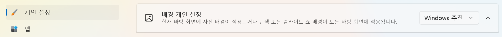

2022-11-06 18:35:00
윈도우의 바탕화면 이미지를 따로 설정하지 않거나 아래와 같이 'Windows 추천' 으로 설정했다면 한번씩 윈도우의 바탕화면 이미지가 자동으로 이런저런 멋진 이미지로 바뀐다. 한번씩 다운받아서 계속 사용하고 싶은 생각이 들기도 한다

이 때 해당 파일을 얻으려면 아래와 같이 하면 된다
- 탐색기에서 %UserProfile%\AppData\Local\Packages\Microsoft.Windows.ContentDeliveryManager_cw5n1h2txyewy\LocalState\Assets 로 이동
- 해당 폴더의 파일들을 특정 폴더(C:\Temp 같은)로 모두 복사
- 복사한 폴더(C:\Temp 같은)에서 파워쉘이나 터미널을 열어서 cmd / c "ren . *.jpg" 를 입력하여 확장자를 붙여준다
- 해당 파일들을 둘러보면 원하는 파일을 얻을 수 있고, 좀 더 고화질 사진을 얻으려면 구글 이미지 검색(https://www.google.com/imghp?hl=ko)에 이미지 파일을 드래그해서 검색해보자